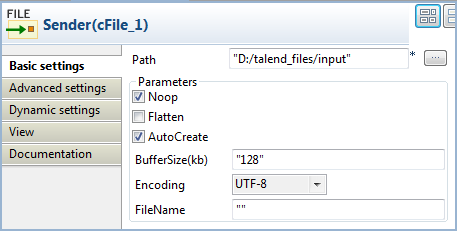
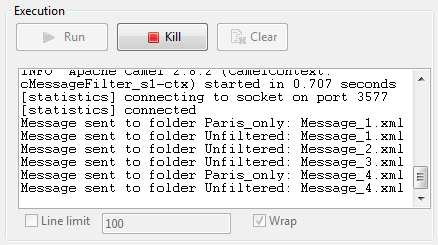

Famille de composant | Routing | |
Fonction | Le composant cMessageFilter filtre le contenu de messages selon le critère spécifié et route les messages filtrés vers le canal de sortie spécifié. Tous les messages ne répondant pas au critère seront ignorés. Pour plus d'informations concernant l'EIP Camel Message Filter, consultez : http://camel.apache.org/message-filter.html (en anglais). | |
Objectif | Utilisez le cMessageFilter pour supprimer des messages non souhaités d'un canal selon un critère défini. | |
Basic settings | Language | Sélectionnez le langage de l'expression à utiliser pour filtrer vos messages parmi Constant, EL, Groovy, Header, JavaScript, JoSQL, JXPath, MVEL, None, OGNL, PHP, Property, Python, Ruby, Simple, SpEL, SQL, XPath et XQuery. |
| Expression | Saisissez l'expression à utiliser pour filtrer les messages. |
Utilisation | Le cMessageFilter est utilisé en tant que composant intermédiaire dans une Route. | |
| Connections | Filter | Sélectionnez ce lien pour router les messages filtrés vers l'endpoint suivant. |
| Route | Sélectionnez ce lien pour router tous les messages de l'émetteur à l'endpoint suivant. | |
Limitation | n/a | |
Dans ce scénario, filtrez les messages XML envoyés par l'endpoint émetteur selon un critère défini : seuls les fichiers XML dans lesquels la valeur du nœud city est Paris sont envoyés dans un dossier nommé Paris_only.
Des quatre fichiers XML utilisés dans ce scénario, Message_1.xml et Message_4.xml contiennent le nom de ville de Paris. Le XML suivant est un exemple :
<person> <firstName>Pierre</firstName> <lastName>Dupont</lastName> <city>Paris</city> </person>
Ce scénario requiert un composant cMessageFilter filtrant les messages de l'émetteur, un cFile émettant les messages, un cFile recevant les messages contenant Paris, un composant cFile recevant tous les messages de l'émetteur et deux cProcessor pour monitorer les messages routés vers les deux récepteurs.

De la famille Messaging de la Palette, déposez trois composants cFile dans l'espace de modélisation graphique et nommez-les respectivement Sender, Paris_only et Unfiltered afin de mieux identifier leur rôle.
De la famille Routing, déposez un cMessageFilter dans l'espace de modélisation graphique et nommez-le Filter.
Du dossier Processor, déposez deux cProcessor dans l'espace de modélisation graphique et nommez-les respectivement Monitor_Paris et Monitor_Unfiltered.
Cliquez-droit sur le composant cFile nommé Sender, sélectionnez Row > Route dans le menu contextuel et cliquez sur le cMessageFilter.
Cliquez-droit sur le cMessageFilter, sélectionnez Row > Filter dans le menu contextuel et cliquez sur le cFile nommé Paris_only. Cet endpoint va récupérer les messages répondant au critère défini.
Cliquez-droit sur le composant cMessageFilter, sélectionnez Row > Route dans le menu contextuel et cliquez sur le cFile nommé Unfiltered. Cet endpoint va collecter tous les messages, y compris ceux répondant au critère défini. Cette connexion est facultative.
Cliquez-droit sur le composant cFile nommé Paris_only, sélectionnez Row > Route dans le menu contextuel et cliquez sur le composant cProcessor nommé Monitor_Paris. Répétez cette étape pour connecter le cFile nommé Unfiltered au cProcessor nommé Monitor_Unfiltered.
Double-cliquez sur le cFile nommé Sender pour ouvrir sa vue Basic settings.
Dans le champ Path, spécifiez le chemin d'accès au message source.
Dans la liste Encoding, sélectionnez le type d'encodage des fichiers du message. Laissez les autres paramètres tels qu'ils sont.
Double-cliquez sur le composant cMessageFilter pour ouvrir sa vue Basic settings.

Sélectionnez le langage de l'expression que vous souhaitez utiliser pour filtrer vos messages et saisissez une expression pour définir un critère selon lequel filtrer vos messages.
Dans ce scénario, triez les fichiers XML contenant un nœud city dont la valeur est Paris, sélectionnez XPath dans la liste Language et saisissez dans le champ Expression l'expression suivante :
"/person[city='Paris']".Double-cliquez sur le composant cFile nommé Paris_only pour ouvrir sa vue Basic settings et renseignez le chemin d'accès pour les messages répondant au critère de filtre, dans le champ Path.

Répétez cette étape pour définir le chemin d'accès à tous les messages provenant de l'émetteur dans le composant cFile nommé Unfiltered.
Double-cliquez sur le cProcessor nommé Monitor_Paris pour ouvrir sa vue Basic settings et personnalisez le code dans la zone Code pour afficher dans la console le nom des fichiers des messages répondant au critère de filtre :
System.out.println("Message sent to folder Paris_only: "+ exchange.getIn().getHeader("CamelFileName"));Répétez cette étape pour personnaliser le code dans le composant cProcessor nommé Monitor_Unfiltered pour afficher le nom des fichiers de tous les messages provenant de l'émetteur.
Appuyez sur Ctrl+S pour sauvegarder votre Route.
Pour visualiser le code généré, cliquez sur l'onglet Code au bas de l'espace de modélisation graphique.

Comme affiché dans le morceau de code ci-dessus, les messages provenant (
from) de l'émetteur sont filtrés par lecMessageFilter_1selon le critère.xpath("/person[city='Paris']")et les messages répondant au filtre sont envoyés vers (.to) l'endpointParis_only, alors que tous les messages sont envoyés vers (.to) l'endpointUnfiltered.Cliquez sur la vue Run pour l'afficher et cliquez sur le bouton Run pour lancer l'exécution de votre Route.
Vous pouvez également appuyer sur F6 pour l'exécuter.
Résultat : Les messages sont filtrés selon le critère défini et les messages contenant la valeur "Paris" sont redirigés vers le dossier Paris_only. Tous les messages, y compris ceux contenant "Paris", sont envoyés dans le dossier Unfiltered.
